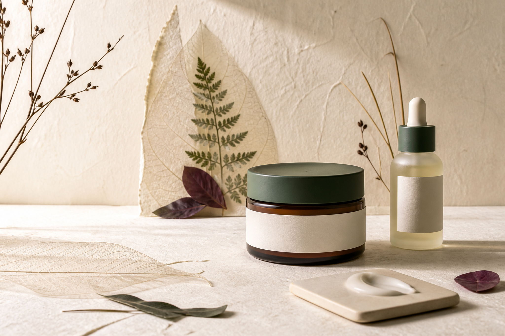
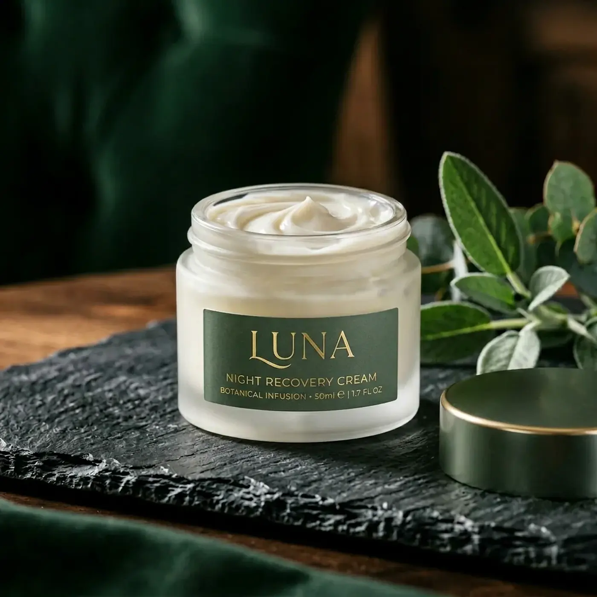

Spokojne minimum dla uczucia suchości.
- RANOłagodny krem + ochrona SPF
- WIECZÓRdelikatne mycie + krem barierowy
Wprowadzaj po jednym produkcie i wykonaj próbę na małym obszarze.
Kosmetyki do prostego rytuału, z czytelną funkcją każdego składnika i kolejnością, którą da się utrzymać także w gorszy dzień.
Zbuduj swój rytuałKoncept portfolio · nie diagnozuje skóry
PIELĘGNACJA / NOTATKA 01
Essence porządkuje kosmetyczne minimum wokół odczucia komfortu, a nie diagnozy. Każdy produkt ma jedną główną rolę, jawne miejsce w rytuale i prostą instrukcję wycofania.
bez obietnic leczenia · bez presji na dziesięć krokówTo orientacja kosmetyczna, nie porada dermatologiczna. Przy podrażnieniu przerwij używanie produktu.
Wprowadzaj po jednym produkcie i wykonaj próbę na małym obszarze.
Te same produkty mogą mieć inne zadanie zależnie od pory. Kolejność wynika z funkcji, nie z liczby opakowań na półce.
W tym koncepcie komunikujemy funkcję kosmetyczną i miejsce w formule — bez udawania leczenia.
Pozycja na liście mówi o kolejności deklaracji, nie o tym, czy jeden składnik „zrobi wszystko”. Formuła działa jako całość.
Aqua, Glycerin, Caprylic/Capric Triglyceride, Squalane, Cetearyl Alcohol, Glyceryl Stearate, Panthenol, Ceramide NP, Xanthan Gum, Sodium Benzoate, Potassium Sorbate.
Komfort użycia nie jest detalem. Warstwa, która roluje się, klei albo wymaga zbyt długiego czekania, szybko znika z codzienności.


Każdy produkt ma jedno główne zadanie i czytelne miejsce w kolejności.


Nałóż kolejną warstwę, gdy poprzednia rozprowadziła się bez rolowania. Wyjątkiem są produkty z własną instrukcją użycia.
Krótko, bez gorącej wody i agresywnego pocierania.
Mała ilość na lekko wilgotną skórę, jeśli jest komfortowa.
Krem tylko w ilości potrzebnej do wygodnej warstwy.
SPF jako osobny ostatni krok zgodnie z etykietą.
Daj skórze czas i łatwo rozpoznaj reakcję.
Mały obszar przed pełnym użyciem zmniejsza niepewność.
Przerwij używanie; jeśli objawy są silne lub trwają, skontaktuj się ze specjalistą.
Próba miejscowa nie gwarantuje tolerancji, ale ułatwia obserwację. Nie testuj kilku nowości w tym samym dniu.
Skład, instrukcja, termin i przeciwwskazania producenta.
Niewielka ilość zgodnie z instrukcją, bez innych nowości.
Nie zwiększaj częstotliwości tylko dlatego, że nic nie czujesz.
Silne lub utrzymujące się objawy wymagają konsultacji.
To wrażenia użytkowe, które pomagają ocenić, czy produkt pasuje do rutyny.
Notuj zmianę tylko wtedy, gdy reszta rytuału pozostaje możliwie stała.
Koncept kosmetyczny nie zastępuje dermatologa ani zaleceń medycznych.

Jeśli dwa produkty spełniają tę samą rolę, nie potrzebujesz obu naraz. Najprostsza rutyna to ta, którą potrafisz opisać jednym zdaniem.
Odpowiedzi dotyczą używania konceptu, nie diagnozowania stanu skóry.
Nie automatycznie. Każdy dodatkowy produkt zwiększa koszt, czas i liczbę możliwych źródeł dyskomfortu.
Nie. Pochodzenie składnika nie przewiduje samodzielnie tolerancji ani bezpieczeństwa całej formuły.
Nie. Jest generowana i kopiowana lokalnie w tej demonstracji portfolio.
Przy podrażnieniu przerwij. Jeśli objawy są silne, bolesne lub utrzymują się, skontaktuj się ze specjalistą.
Skopiuj ją lokalnie. Ten koncept nie zbiera danych i nie prowadzi sprzedaży.
Wróć do pytań ↑